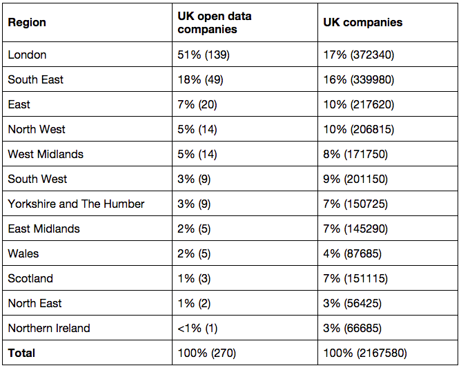

Diverse UK companies are working with open data
What is open data?
What is an open data company?
Open data companies are distributed across the UK
UK companies old and new are investing in open data
UK companies across a range of industries are using open data
UK companies large and small are using open data
How to cite
Many different types of companies in the UK are harnessing the benefits of open data
We identified and analysed 270 companies that use, produce or invest in open data as part of their business, using desk research, surveys and interviews about their experiences. The open data companies we studied have an annual turnover of over £92bn, and over 500k employees between them. This shows the scale of open data’s potential value in business.
This section explains our findings that UK open data companies vary by location, age, industry and size; there is not one single model that defines a UK open data company.
You can explore our findings on business strategies, the kinds of open data that companies use or produce, the challenges they face in doing so and some real-life company examples of open data innovation in sections to the right on this page.
What is open data?
Open data is data that anyone can access, use and share. For data to be considered ‘open’, it must be published in an accessible format, with a licence that permits anyone to access, use and share it.
What is an open data company?
We define an open data company as one that uses, produces, or otherwise invests in open data as a key aspect of its work. It could be a data publisher, making data open for others to use. It could be a user, creating services with open data made available by other platforms. Or it could be an enabler, training or advising others in how to work with open data.
Open data companies are distributed across the UK
UK companies do not need to be small, agile startups located in the tech communities of East London to engage with open data. Our research revealed that open data companies are located across Scotland, Wales, Northern Ireland and all regions of England.
Figure 1.1: Map showing the location of 270 UK open data companies determined by main trading address, where available (223 companies), otherwise by registered company address (47 companies). (credits)

Table 1.1: Location of 270 open data companies by country and region (based on ONS regions as defined in the National Statistics Postcode Lookup). Locations determined by main trading address where available (223 companies), otherwise by registered company address (47 companies). Frequencies shown in brackets. UK companies frequencies from ONS UK Business: Activity, Size And Location - 201. (credits)
While open data companies are located across all parts of the UK, the distribution between regions is uneven. Some of this skew can be attributed to the distribution of companies more generally, but not all. For example, around half (51%) of the open data companies identified are located in London (compared to 17% of all businesses based on ONS figures). We can look more closely at these companies by mapping their distribution across the capital.
Figure 1.2: Map showing the location of 139 London-based open data companies determined by main trading address, where available, otherwise by registered company address. (credits)
Open data companies are spread across London, covering 19 boroughs. For a full breakdown of companies by borough, please see Appendix Table A1.1. The highest concentrations of these companies in individual boroughs can be found in Camden and Westminster (both 17%). More than one quarter (26%) are based in the boroughs of Hackney and Islington combined. This can likely be attributed to the East London technology cluster around Old Street roundabout, which is located on the border of the two boroughs. This cluster represents 13% of all open data companies in the UK. So while open data companies are evidently not exclusively a ‘Silicon Roundabout’ phenomenon, they have a disproportionately high presence in this area.
UK companies old and new are investing in open data
Open data companies in the UK vary in age, as revealed through analysis of their incorporation dates.
Figure 1.3: distribution age of 270 UK open data companies by age since incorporation date
Table 1.2: Age of UK open data companies by incorporation date. Frequencies shown in brackets. UK companies frequencies from ONS UK Business: Activity, Size And Location - 2013. (credits)
Open data is not the sole domain of startups and young companies – only about a quarter (26%) of open data companies are less than 3 years old. The median age for a UK open data company is eight years, with just over a third of companies (34%) between four and nine years old. When this is considered alongside the 39% of companies that are more than 10 years old, it becomes clear that open data can be leveraged by well-established companies as well as recent startups. In fact, the oldest identified open data company is over a century old.
UK companies across a range of industries are using open data
Open data companies in the UK are operating in a wide variety of 13 industries. We can use UK Standard Industrial Classification (SIC) codes to determine which broad industry groups they operate in.

Figure 1.4: Industry classification of UK open data companies by ONS broad industry grouping

Figure 1.5: Industry classification of "other industry" category in Figure 1.4
Table 1.3: Industry classification of UK open data companies and all companies by ONS broad industry group. Frequencies shown in brackets. UK companies frequencies from ONS UK Business: Activity, Size And Location - 2013 (Table B1.1). (credits)
Companies we identified operate in 13 out of the 17 broad industry groups recognised by the ONS. Over half (54%) of the open data companies operate in the information and communication industry. This is notably larger than the 8% of all UK companies in this industry, which was to be expected given the focus of this research.
Professional, scientific and technical activities made up over a fifth (21%) of all open data companies. A further 11% of open data companies are in the category of business administration and support services. The remaining ten industries each have a relatively small amount of representation. According to the SIC industry classifications of broad industry groups, open data companies were not represented in agriculture, forestry & fishing, accommodation & food services, property or motor trades.
While the SIC industry classifications are able to provide a picture of the industries in which open data companies operate, they do have some limitations. Given the system was first designed in the 1940s and the codes were last updated in 2007, it may fail to effectively capture emerging industries and technologies.
A second issue to be considered is that SIC codes may not accurately denote the industry which open data companies work in. For example, companies that provide open data products and services may be classified under information and communication, even though they provide the majority of their products and services to specific industries, such as ‘Agriculture, forestry & fishing’, ‘Accommodation and food services’ or ‘Property’. This explains the zero frequencies shown in the table for these broad industry groups, despite the presence of companies such as Syngenta, FoodTrade and Illustreets in this study.
UK companies large and small are using open data
Micro, small, medium and large enterprises are working with open data. Using our survey data, we can closely examine the size of these companies, in terms of number of employees.
Figure 1.6: Responses to the question "What is the size of your company?" (n=79)
Table 1.4: Responses to the question "What is the size of your company?". Frequencies shown in brackets (n=79). UK companies frequencies from ONS UK Business: Activity, Size And Location - 2013 (Table B1.2). (credits)
UK open data companies vary in size, from those with fewer than 10 employees to those with more than 1000. The majority (70%) of these companies can be defined as micro-enterprise companies (with fewer than 10 employees). Small- and medium-sized businesses (SMEs), with between 10 and 250 employees, make up the majority of the remaining companies (23% of all companies).
This is not to say that larger companies are not also well-represented. In fact, 8% of responding companies are large or enterprise sized, in having 251 or more employees.
The findings in this section tells us that open data can benefit diverse companies at some level, regardless of their location, age, sector or size. The following sections focus on business strategies, the kinds of open data that companies use or produce, the challenges they face in doing so and some real-life company examples of open data innovation.
How to cite
Please cite this report as: Open Data Institute (2015) Open data means business: UK innovation across sectors and regions. London, UK. Available at open-data-means-business-uk-innovation-sectors-regions
PREVIOUS PAGE / NEXT PAGE